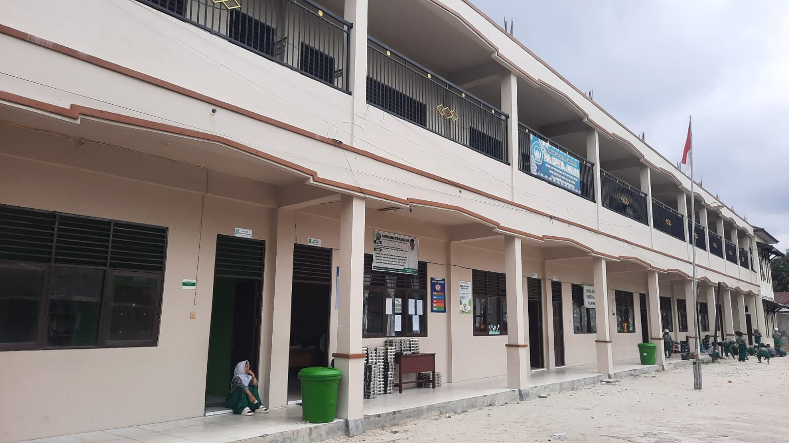

Madrasah Tsanawiyah (MTs) Fathul Jannah Palangka Raya merupakan lembaga pendidikan formal tingkat menengah pertama berciri khas Islam yang berada di bawah naungan Pondok Pesantren Busra Chalid, Kalimantan Tengah.
Dengan memadukan kurikulum nasional Kementerian Agama dan nilai-nilai kepesantrenan, madrasah ini berkomitmen mencetak generasi muda yang kokoh dalam keimanan, mulia dalam akhlak, unggul dalam ilmu pengetahuan, serta adaptif terhadap perkembangan teknologi.
| Nama Madrasah | : MTs Fathul Jannah Palangka Raya |
| Naungan Yayasan | : Pondok Pesantren Busra Chalid |
| NPSN / NSM | : (69895250 / 121262710006) |
| Status | : Swasta / Terakreditasi |
| Alamat | : Palangka Raya, Kalimantan Tengah |
Sinergi kepemimpinan dalam mewujudkan pendidikan Islam yang berkualitas
"Pondok Pesantren Busra Chalid melalui MTs Fathul Jannah hadir untuk mengemban amanah umat dalam membina generasi Qur'ani yang berilmu amaliah dan beramal ilmiah."

"Kami berkomitmen menghadirkan lingkungan belajar yang nyaman, disiplin, dan berkarakter agar setiap peserta didik mampu mengembangkan potensi terbaiknya."